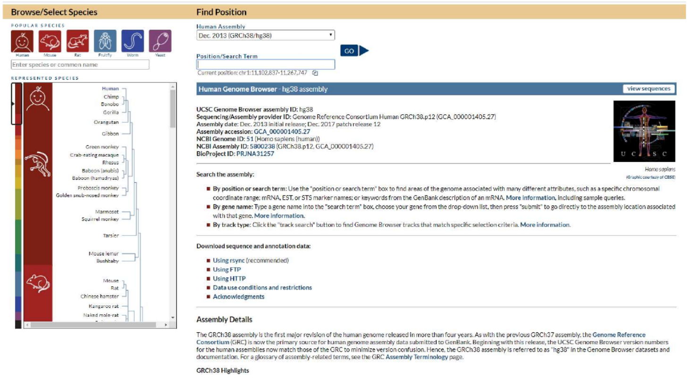

Navegando por genomas
Com a contribuição do Prof. Gustavo Antônio de Souza, BioME/UFRN.
Introdução
O navegador de genomas da Universidade da California de Santa Cruz permite visualização de genomas de diversos organismos, e integração do dado de genoma com dados paralelos em diferentes níveis (presença de região codificadora, estrutura do gene, domínios protéicos, dados clínicos, etc). Se usada em sua plenitude, é uma ferramenta de bastante alcance, principalmente nas áreas de Biologia Molecular e Biotecnologia.
A busca de regiões de interesse pode ser realizada usando a posição do genoma (ex: nucleotídeos 11,102,837 a 11,267,747), a posição no cromossomo (Ex: chr1q44), ou o nome do gene de interesse (usando nome oficial do gene por ex: TGM2, para transglutaminase 2). Se você não conhece a região ou nome do gene que você tem dado de sequência, o navegador também possui uma opção de busca de sequências, chamada de BLAT. De maneira simples, o BLAT é uma ferramenta de alinhamento como o BLAST, mas com a vantagem de que permite o alinhamento de uma proteína com uma sequência de nucleotídeos e vice-versa (embora também faça busca por similaridade, o BLAST só realiza o alinhamento entre proteínas ou entre nucleotídeos).
Navegando pelo genoma humano
Passo 1: Abra o navegador da internet e vá no seguinte endereço: https://genome.ucsc.edu/.
Passo 2: Em “Our Tools”, clique em “Genome Browser”.

Passo 3: Na coluna à esquerda, você pode selecionar o organismo de interesse. Além de dados de genoma humano, hà tambem outros organismos modelos relevantes como camundongo, Drosophila, leveduras e até algumas espécies vegetais. Geralmente essa janela automaticamente já inicia com a espécie Homo sapiens selecionada. Note que para cada organismo, existe diferentes versões do genoma (ao longo do tempo, erros de sequenciamento são corrigidos, novas regiões como exons são descobertos, etc). Escolha o organismo Homo sapiens.
Passo 4: Em “Find Position” à direita, escolha a versão do genoma a ser carregado (em humanos, a versão mais atual disponível é Dec.2013 (GRCh38/hg38). “Position/Search Term” pode ser deixado em branco, ou já coloquem o nome de um gene, posição ou cromossomo. Não é obrigatório, quando o Browser for carregado com o genoma, existe um campo de busca para termos disponível. No momento, não preencha nada aqui. Passo 5: Aperte “Go”.

É compreensível que, em uma primeira impressão, o Browser parece desnecessariamente confuso. Como nós não demos o termo de busca no início, o Browser carregou aproximadamente 165 mil pares de base do cromossomo 1. Em (1) acima mostra a representação gráfica do cromossomo, a linha vermelha abaixo do (2) mostra a posição do cromossomo 1 que estamos visualizando. Você pode clicar e arrastar essa barra vermelha pra visualizar outras regiões do cromossomo 1.
A coluna mais à esquerda (3) com nomes como “Alt haplotypes” ou “OMIM alleles” são exemplos de módulos que foram carregados que integram dados de RNA, proteína, expressão em tecidos, mutações relacionadas a condições clínicas, etc. Cada módulo individual pode ser “ligado/desligado” de acordo com seu interesse. Por exemplo, a figura mostra um módulo (4) de comparação de genomas de 100 organismos diferentes nessa região (“Multiz alignments of 100 vertebrates”). Se vocês como profissionais de ciências agrárias não têm interesse nesse tipo de análise, simplesmente desliguem esse módulo e essa informação deixa de ser visualizada no Browser.
Passo 6: Para desligar/ligar módulos, cheque a tabela abaixo do Browser.

Para o presente roteiro prático, vamos manter o Browser o mais simples possível, portanto vamos manter o mínimo de informações abertas:
- Mapping and Sequence, selecione somente “Base Position” como “dense”. O resto tudo fica escondido (hide).
- Genes and Gene Predictions: “GENCODE v32”, “NCBI RefSeq” e “Pfam in UCSC Gene” selecionados como “Pack”, e “UniProt” como “dense”.
- Phenotypes and Literature, todos ficam “hide”.
- mRNA and ESTs, todos ficam “hide”.
- Expression, “GTEx Gene” ficam em “pack”, o resto em “hide”
- Regulation, todos ficam em “hide”.
- Comparative Genomics, todos em “hide”.
- Variation, “Common SNPs(151)” ficam em “dense”, o resto em hide.
- Repeats, todos ficam em “hide”.
Exemplo:
Passo 7: Encontre seção “Comparative genomics”. Passo 8: Altere “Conservation” da opção “full” para opção “hide”.

Passo 9: Quando mudar todos, clique em “Refresh” e aquela análise selecionadas como “hide” irão sumir do Browser.
IMPORTANTE: Clicando no nome de cada módulo no Browser ou na tabela abaixo do Browser irá abrir uma página com uma breve explicação do que aquele módulo demonstra na análise.
Passo 10: Carregando um gene: digite TGM2 (uma importante enzima em casos de doença celíaca) no campo de busca, clique no nome que o autocompletar sugerir, e clique em “Go”.

Cada dado carregado por cada módulo é separado por um titulo, por exemplo a primeira linha em preto demostra o modelo genético do gene de acordo com Gencode v29 (título “Gencode v29 Compreheensive Transcript Set”), onde todos os exons e íntrons estão presentes. Passando o mouse sobre cada intron/exon, a informação do número do exon/intron aparece.
- Pergunta: esse gene se encontra na fita senso (5'--3') ou na fita complementar do genoma (3'--5)?
Em azul escuro, abaixo, estão demonstrados os variantes de splicing presentes no NCBI RefSeq (dados de cDNA). Linhas delimitan introns e barras delimitam exons. Você pode usar as opções “Zoom out” e “Zoom in”.
- Pergunta: Quantas variantes estão presentes? Que tipos de eventos de splicing você consegue identificar (existem 3 tipos, em um deles precisa dar um zoom out de 1,5x).
Em azul claro está os domínios funcionais da proteína de acordo com PFAM. Lembre, o Genome Browser é uma ferramenta de anotação do genoma, então o que voce está visualizando aqui são os exons que traduzem o domínio funcional da proteína TGM2. Cada domínio é clicável para que informações mais detalhadas possam ser obtidas.
Em seguida estão presentes várias informações anotadas a nível proteico presentes no Uniprot. Use o nome das linhas à esquerda para auxiliar o que está demonstrando.

Clicando nas linhas “Domains” ou “Structure”, por exemplo, a predição da estrutura secundária é carregada.

Abaixo, as barras coloridas mostram dados de expressão do gene em 53 tecidos de acordo com o projeto GTEx, passe o mouse sobre cada coluna e o Browser informa o tecido representado e o valor da quantificação em RPKM. Finalmente, abaixo das barras, informações com mutações (SNPs) presentes nesse gene.
- Pergunta: As mutações estão presentes somente em regiões codificantes? O que significa polimorfismos em preto, verde e azul?
Submetendo dados ao Genome Browser
Digamos que em um projeto de pesquisa ou em um laboratório clínico, voce descobriu e sequenciou uma possível nova isoforma de um gene que está associado a uma doença. Como visualizar esse dado com ajuda do Browser?
Passo 11: Copie a sequência abaixo.
>Seq1
MDLSALRVEEVQNVINAMQKILECPICLELIKEPVSTKCDHIFCKFCMLKLLNQKKGPSQCPLCKN
DITKRSLQESTRFSQLVEELLKIICAFQLDTGLEYANSYNFAKKENNSPEHLKDEVSIIQSMGYRN
RAKRLLQSEPENPSLQETSLSVQLSNLGTVRTLRTKQRIQPQKTSVYIELGSDSSEDTVNKATYCS
VGDQELLQITPQGTRDEISLDSAKKAACEFSETDVTNTEHHQPSNNDLNTTEKRAAERHPEKYQGS
SVSNLHVEPCGTNTHASSLQHENSSLLLTKDRMNVEKAEFCNKSKQPGLARSQHNRWAGSKETCND
RRTPSTEKKVDLNADPLCERKEWNKQKLPCSENPRDTEDVPWITLNSSIQKVNEWFSRSDELLGSD
DSHDGESESNAKVADVLDVLNEVDEYSGSSEKIDLLASDPHEALICKSERVHSKSVESNIEDKIFG
KTYRKKASLPNLSHVTENLIIGAFVTEPQIIQERPLTNKLKRKRRPTSGLHPEDFIKKADLAVQKT
PEMINQGTNQTEQNGQVMNITNSGHENKTKGDSIQNEKNPNPIESLEKESAFKTKAEPISSSISNM
ELELNIHNSKAPKKNRLRRKSSTRHIHALELVVSRNLSPPNCTELQIDSCSSSEEIKKKKYNQMPV
RHSRNLQLMEGKEPATGAKKSNKPNEQTSKRHDSDTFPELKLTNAPGSFTKCSNTSELKEFVNPSL
PREEKEEKLETVKVSNNAEDPKDLMLSGERVLQTERSVESSSISLVPGTDYGTQESISLLEVSTLG
KAKTEPNKCVSQCAAFENPKGLIHGCSKDNRNDTEGFKYPLGHEVNHSRETSIEMEESELDAQYLQ
NTFKVSKRQSFAPFSNPGNAEEECATFSAHSGSLKKQSPKVTFECEQKEENQGKNESNIKPVQTVN
ITAGFPVVGQKDKPVDNAKCSIKGGSRFCLSSQFRGNETGLITPNKHGLLQNPYRIPPLFPIKSFV
KTKCKKNLLEENFEEHSMSPEREMGNENIPSTVSTISRNNIRENVFKEASSSNINEVGSSTNEVGS
SINEIGSSDENIQAELGRNRGPKLNAMLRLGVLQPEVYKQSLPGSNCKHPEIKKQEYEEVVQTVNT
DFSPYLISDNLEQPMGSSHASQVCSETPDDLLDDGEIKEDTSFAENDIKESSAVFSKSVQKGELSR
SPSPFTHTHLAQGYRRGAKKLESSEENLSSEDEELPCFQHLLFGKVNNIPSQSTRHSTVATECLSK
NTEENLLSLKNSLNDCSNQVILAKASQEHHLSEETKCSASLFSSQCSELEDLTANTNTQDPFLIGS
SKQMRHQSESQGVGLSDKELVSDDEERGTGLEENNQEEQSMDSNLGEAASGCESETSVSEDCSGLS
SQSDILTTQQRDTMQHNLIKLQQEMAELEAVLEQHGSQPSNSYPSIISDSSALEDLRNPEQSTSEK
AVLTSQKSSEYPISQNPEGLSADKFEVSADSSTSKNKEPGVERSSPSKCPSLDDRWYMHSCSGSLQ
NRNYPSQEELIKVVDVEEQQLEESGPHDLTETSYLPRQDLEGTPYLESGISLFSDDPESDPSEDRA
PESARVGNIPSSTSALKVPQLKVAESAQSPAAAHTTDTAGYNAMEESVSREKPELTASTERVNKRM
SMVVSGLTPEEFMLVYKFARKHHITLTNLITEETTHVVMKTDAEFVCERTLKYFLGIAGGKWVVSY
FWVTQSIKERKMLNEHDFEVRGDVVNGRNHQGPKRARESQDRKIFRGLEICCYGPFTNMPTDQLEW
MVQLCGASVVKELSSFTLGTGVHPIVVVQPDAWTEDNGFHAIGQMCEAPVVTREWVLDSVALYQCQ
ELDTYLIPQIPHSHY
Passo 12: Na barra azul do começo da página, selecione “Tools > BLAT”. Passo 13: Cole a sequência no campo correto e clique Submit.
Passo 14: Note o tempo que levou a busca (comparado ao BLAST que vocês fizeram na outra aula). Repare parâmetros dos resultados como Score, % de identidade, etc. Passo 15: Clique em “Details”. Resultados mostram na primeira parte (“Yourseq”) os aminoácidos que alinharam no genoma (azul escuro), posição dos limites dos “gaps” (em azul claro).
ATENÇÃO: gaps aqui, significa as bordas entre exons e introns - repare na segunda parte do resultado (“Human.chr17”), nucleotídeos em azul escuro correspondem aos códons dos aminoácidos em azul escuro na primeira parte e fazem parte de um exon do gene. O primeiro e último códon de cada exon (a borda do exon) está anotado em azul claro (borda do “gap” como descrito acima).
- Pergunta: Que parte do gene representam os nucleotídeos em preto?
Passo 16: Clique em “Browser” e sua sequência será carregada juntamente a posição do gene que melhor alinhou a ele no resultado do Blat.
- Pergunta: Qual o nome do gene?
Considerações finais
Muitos dos bancos de dados que serão apresentados na Unidade II da disciplina se encontram disponíveis numa interface única no Genome Browser. Todos esses dados podem ser baixados e analizados localmente. Basta voltar à pagina inicial da UCSC e selecionar “Downloads – Genome Data”.
Finalmente: para maiores informações e detalhes, o próprio site do Browser oferece tutoriais e vídeos para usuário iniciantes e avançados. O link para iniciantes é: http://genome.ucsc.edu/goldenPath/help/hgTracksHelp.html#GetStarted.